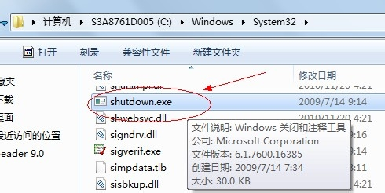

Win7系统定时关机如何设置
- 浏览：21231
- |
- 更新：
百度经验:jingyan.baidu.com
很多时候，我们看电影或者连续剧看到很晚看累了，希望电脑能自动设置定时关机。但是Win7系统没有自带的定时关机软件，这点让大家很头疼。本文为大家介绍在win7系统下如何设置定时关机的技巧和方法，希望大家能够受用。
设置定时关机的几个步骤
1、【所有程序】--【附件】，在附件中的【系统工具】中找到【任务计划程序】并打开；
2、在右边的操作中选择【创建基本任务】，你可以在【任务名称】中填写你想填的名字，我这里填写的是"定时关机"；
3、选择任务执行时间，对于每天都要定时关机的可以选择"每天"；对于每个星期中有几天不需要关机的可以选择"星期"；至于"每月"不推荐选择，因为时间跨度太大了，一般人用不到这个功能。我这选择的是"每天"；
4、在时间框里填写好定时关机时的时间；
5、选择【启动程序】，输入：C:WindowsSystem32shutdown.exe，关键是要找到shutdown.exe，这个根据个人安装系统的位置而定，可以从浏览中找到。

然后，在添加参数中输入“-s”或者输入“-f -s”就可以了，-s:关机命令，-f:强制关闭正在运行的应用程序。主意：双引号就不要输入了。
6、单击完成，出现主界面；
7、在计划任务库中可以查看到你添加的任务，还可以更改，删除选定的任务，更改时选择属性就可以了。
经验内容仅供参考，如果您需解决具体问题(尤其法律、医学等领域)，建议您详细咨询相关领域专业人士。


![]()